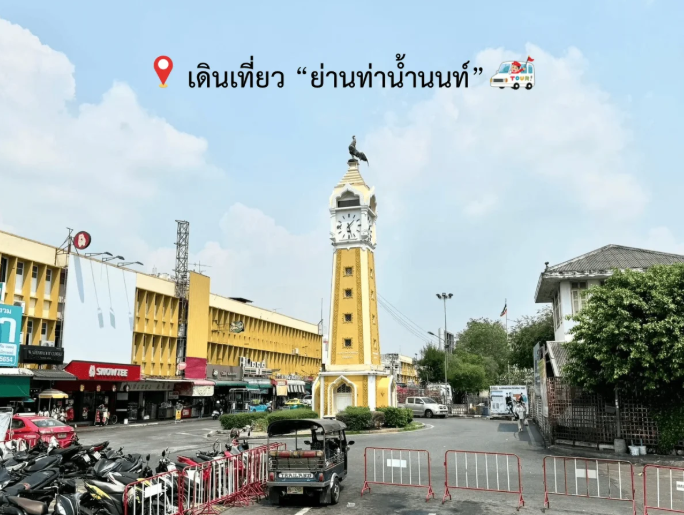
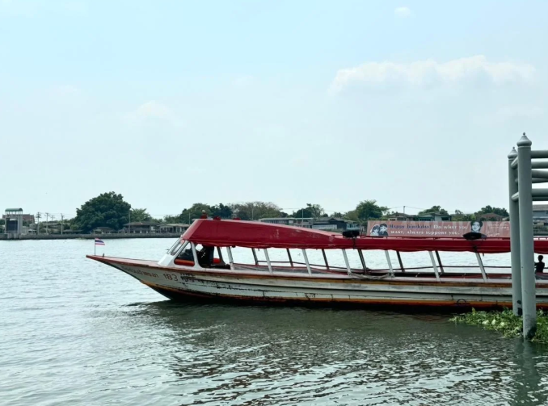
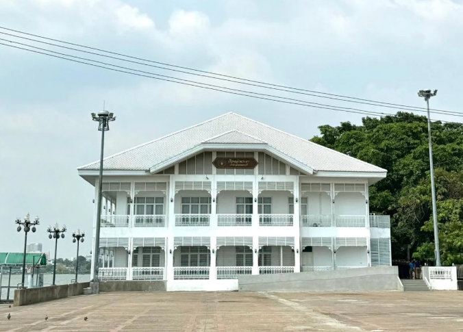
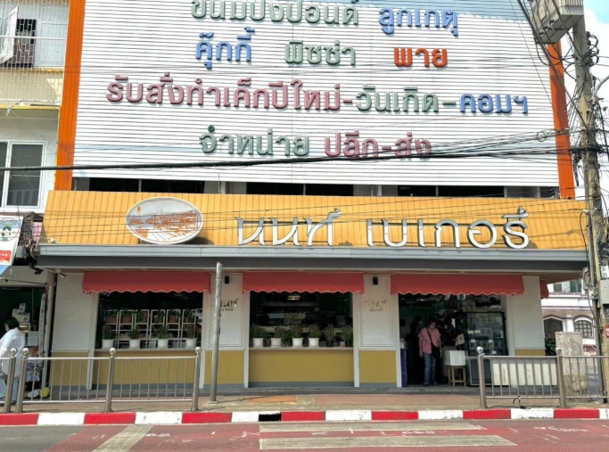
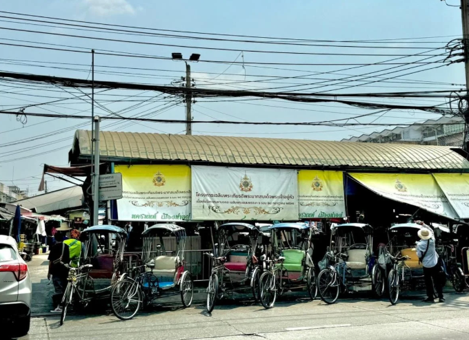

ท่าน้ำนนท์

หอนาฬิกาท่าน้ำนนท์สร้างขึ้นในปี พ.ศ. 2500 โดยกระทรวงมหาดไทย เพื่อให้ประชาชนใช้ดูเวลาในขณะสัญจร ด้วยความสูง 17 เมตรและหน้าปัดนาฬิกาทั้ง 4 ด้าน ทำให้สามารถมองเห็นได้จากทุกทิศทาง บนยอดหอนาฬิกามีรูปปั้นไก่ซึ่งกลายเป็นจุดสังเกตสำคัญ ปัจจุบันหอนาฬิกาแห่งนี้ไม่เพียงแต่เป็นเครื่องบอกเวลา แต่ยังเป็นเอกลักษณ์และศูนย์กลางของย่านการค้าท่าน้ำนนท์ที่มีชีวิตชีวาเสมอมา

ท่าเรือนนทบุรีตั้งอยู่ริมแม่น้ำเจ้าพระยาในจังหวัดนนทบุรี เป็นจุดเชื่อมต่อการเดินทางทางน้ำสำคัญที่สะดวกสบายสำหรับชาวเมืองและนักท่องเที่ยว มีบริการเรือข้ามฟากและเรือโดยสารไปยังพื้นที่ต่างๆ รอบแม่น้ำเจ้าพระยาด้วยนะ ค่าโดยสารเริ่มต้นที่ประมาณ 5-10 บาท ขึ้นอยู่กับระยะทาง การเดินทางด้วยเรือให้ความสะดวกสบาย และวิวที่สวยงามของแม่น้ำเจ้าพระยา มีลมพัดตลอดเวลา

เรือนเจ้าพระยาตั้งอยู่ในเขตเทศบาลนนทบุรีใกล้ๆท่าเรือ เป็นสถานที่สำคัญที่เชื่อมโยงประวัติศาสตร์และวัฒนธรรมของจังหวัดนนทบุรี อาคารนี้มีสถาปัตยกรรมที่สวยงามและสะท้อนถึงความเป็นมาของเมืองนนทบุรีในยุคก่อนๆ ถูกใช้เป็นสถานที่สำหรับกิจกรรมทางวัฒนธรรมและการท่องเที่ยวต่างๆ ผู้มาเยือนสามารถสัมผัสบรรยากาศที่เงียบสงบและเพลิดเพลินกับวิวทิวทัศน์ของแม่น้ำเจ้าพระยา

นนท์ เบเกอรี่ เป็นร้านขนมเก่าแก่ที่ได้รับความนิยมมากที่สุดแห่งหนึ่งในย่านท่าน้ำนนท์ ด้วยความหลากหลายของเมนูขนมอบและรสชาติที่อร่อยเป็นเอกลักษณ์ พนักงานของร้านยังให้บริการอย่างเป็นกันเอง ทำให้ลูกค้ารู้สึกอบอุ่นทุกครั้งที่แวะมา หนึ่งในเมนูที่พลาดไม่ได้คือ เอแคลร์ ซึ่งขายดีจนหมดเร็วทุกวัน

สามล้อ ที่ท่าน้ำนนท์เป็นหนึ่งในเอกลักษณ์ของการเดินทางในจังหวัดนนทบุรี ด้วยรูปลักษณ์ที่มีความคลาสสิกของรถสามล้อ ทำให้เป็นที่นิยมทั้งกับนักท่องเที่ยวและชาวบ้านในการเดินทางระยะสั้น เสน่ห์ของสามล้อท่าน้ำนนท์คือการเดินทางที่สะดวกและสนุกกับการรับลมริมทาง ราคาค่าโดยสารเริ่มต้นประมาณ 20-30 บาท ขึ้นอยู่กับระยะทาง